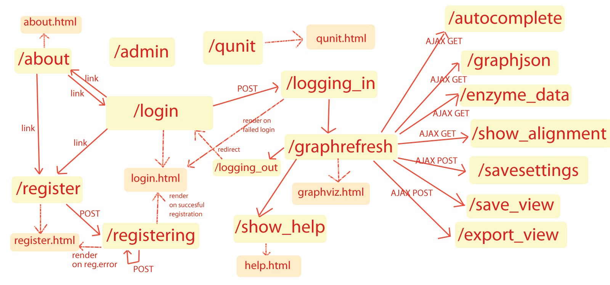

Page overview graph

user management - userdb/views.py
- / - Login page. Redirects directly to /graphrefresh once logged in, login form POSTs to /logging_out. Templates used: login.html
- /register - registration page. Registration form POSTs to /registering. Templates used: register.html
- /registering - Creates the account based on POST parameters. Renders register.html again on error, renders login.html on success.
- /logging_in - authenticates the user. Redirects to /graphrefresh on success, renders login.html with an error message on error.
- /logging_out - logs the user out. Redirects to /
help/info pages - userdb/views.py
- /about - the about page. Templates used: about.html
- /show_help - the help/user manual page. Templates used: help.html
graph visualization - viz/views.py - REQUIRES LOGIN
- /graphrefresh - show the graph. The main page of the whole program. Renders graphviz.html, includes all the javascript files. Communicates with the server using a bunch of interfaces
graph visualization - graph JSON data interface - viz/views.py REQUIRES LOGIN
- /graphjson - generates the graph JSON. Calls to the graph_JSON module to perform the graph drawing.
- /autocomplete - serverside query service for the enzyme autocompletion
- /enzyme_data - fetch enzyme extra data (pathways, all names)
- /show_alignment - fetch alignment information for a blast.
admin/dev interface - django internal, qunit.html
- /admin/ - The django admin panel
- /qunit - qunit unit tests. Templates used: qunit.html